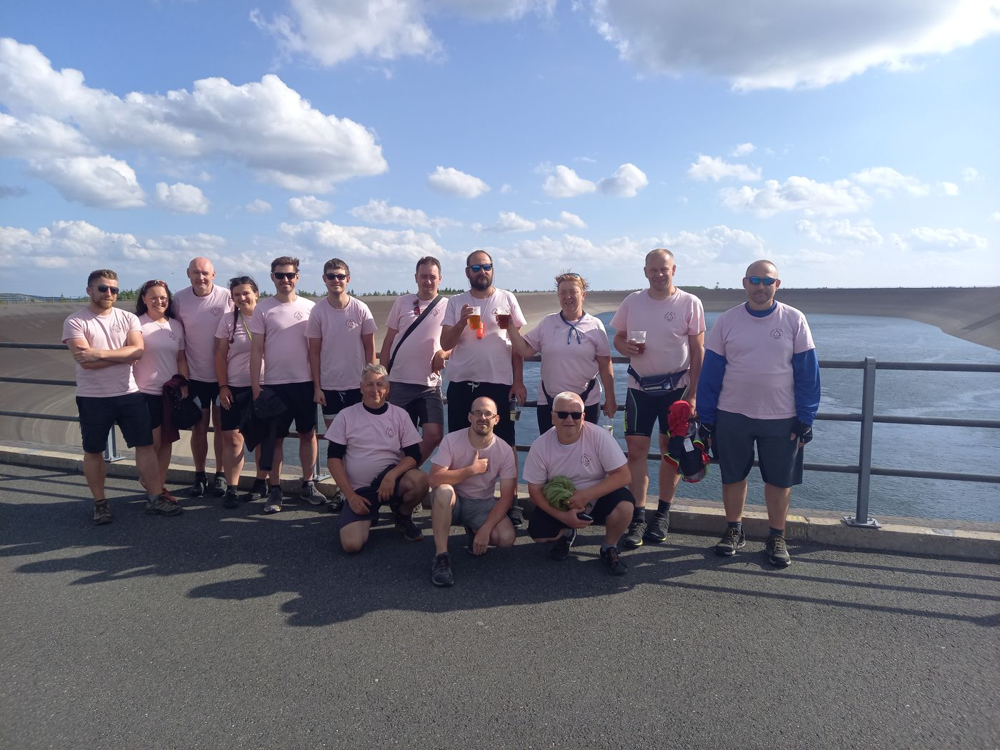
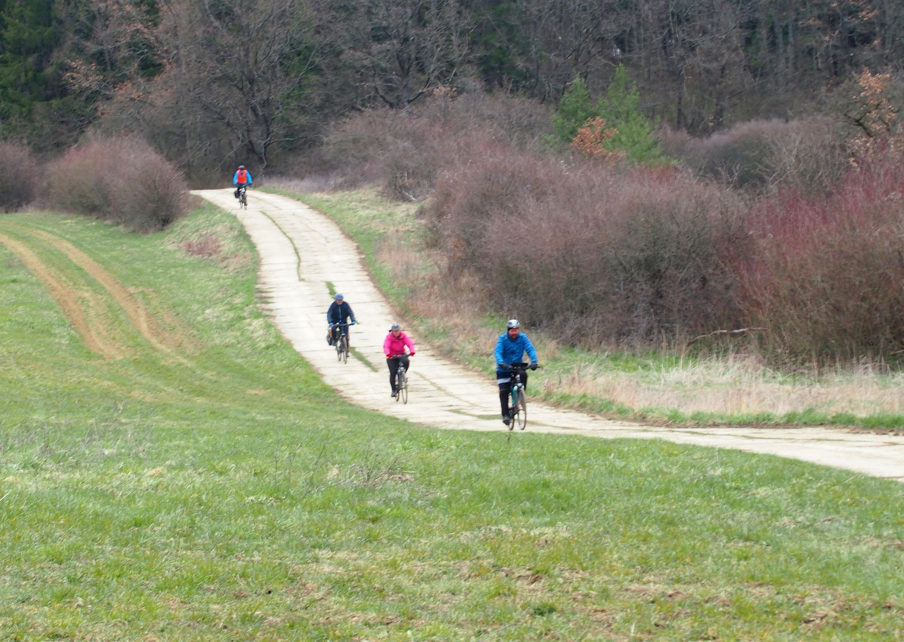
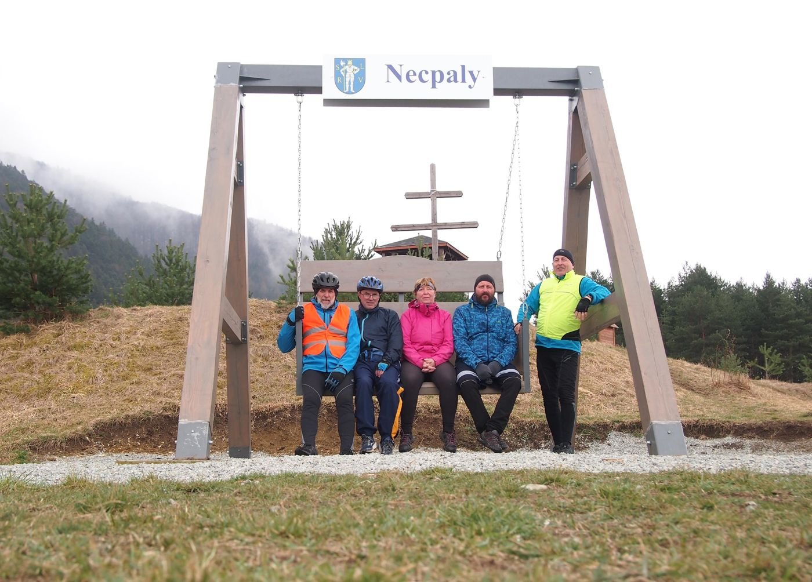
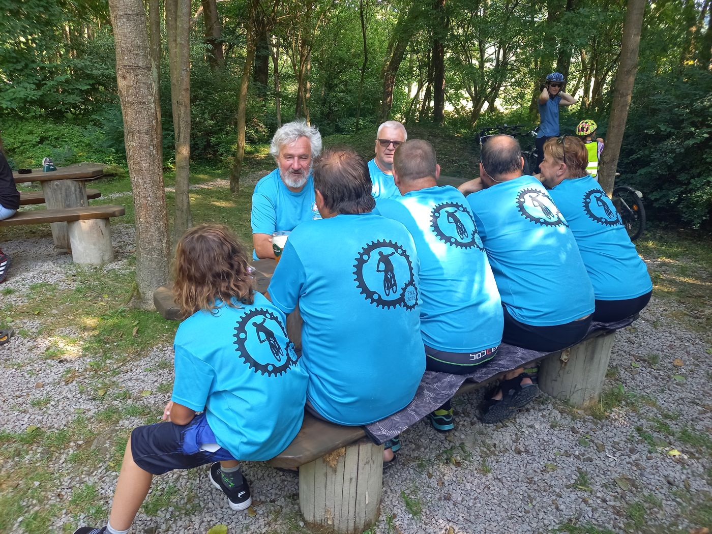

Oddíl cykloturistů z Kutné Hory. Na kole, na vodě, pěšky i na běžkách – už od roku 1979.
Přidejte se k nám Prázdniny na koleJsme oddíl cykloturistů z Kutné Hory, který v roce 1979 založil Jaromír Krtička. Dnes nás vedou manželé Lenka a Lukáš Podolákovi. Jezdíme na kole, splouváme řeky na nafukovacích lodích, chodíme po krásách naší vlasti a v zimě se z nás stávají přátelé bílé stopy.
Během roku pořádáme jednodenní i vícedenní akce – pro členy oddílu a jejich rodiny i pro širokou veřejnost. Sejde se u nás parta od předškoláků až po aktivní důchodce a platí jediné pravidlo: kolo sbližuje.

Každý rok se opakují čtyři akce, na které se těšíme nejvíc. Všechny jsou otevřené i pro veřejnost.
Týdenní putování na kolech s lidmi z celé republiky – každý rok jinou krajinou, s přejezdy mezi ubytováními. Pořádáme ho už přes 40 let. Podrobnosti →
Jarní procházka po Kutné Hoře a okolí s odborným výkladem, vhodná pro všechny – od miminek v kočárku po zdatné osmdesátníky.
Zimní výjezdy na běžky, třeba do Janských Lázní, pro členy oddílu i širokou veřejnost.
Sváteční procházka, která každý rok vytáhne od stolu 60–70 milovníků turistiky – ani mráz je neodradí.



Co jsme v posledních letech zažili. Fotky a čerstvé zprávy z akcí najdete na našem Facebooku.
Kdo chce, může se přidat – na jednu akci i natrvalo. Nepotřebujete závodní kolo ani kondici sportovce, stačí chuť jezdit, poznávat a užít si to s dobrou partou.
Dvakrát do roka se scházíme na oddílové schůzi v restauraci Kotor v Kutné Hoře, kde představujeme plán akcí. Pokud bydlíte v Kutné Hoře nebo okolí a zaujalo vás to, klidně přijďte mezi nás.
Termíny akcí a fotky průběžně zveřejňujeme na Facebooku.